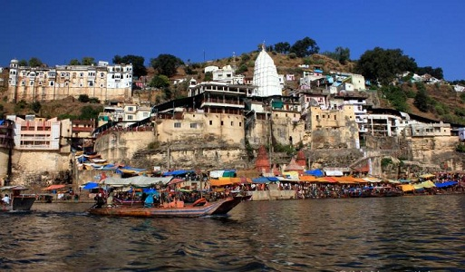

Omkareshwar, Madhya Pradesh
The Omkareshwar Temple is located on an “Om” shaped island in River Narmada in the state of Madhya Pradesh. It is dedicated to Lord Shiva manifested as the three headed Omkareshwar and is one of the most visited Shiva temples in the country.